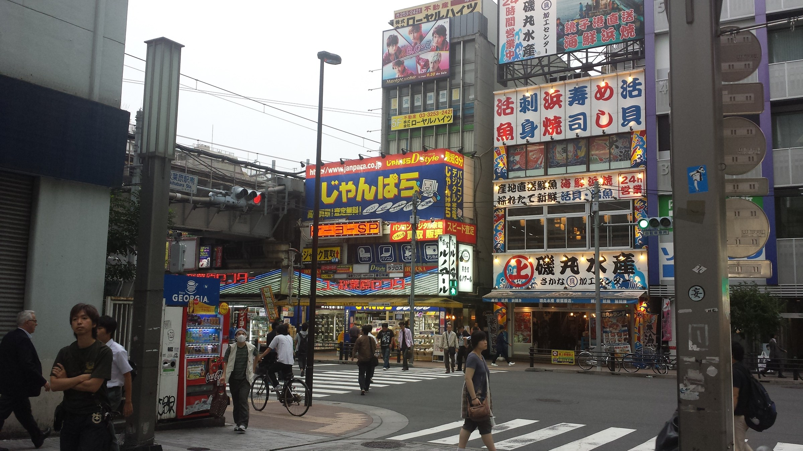

Tokyo Anime Map
Akihabara, Nakano Broadway, Ikebukuro, Animate, Pokemon Center, and Odaiba create a complete city-based fan route.
Anime · Games · IP culture
A 10-day route for anime, manga, game, character, and theme-park fans, built around Tokyo pop culture, Ghibli, Nintendo, USJ, and supervised youth-friendly discovery.
10 days · Year-round, best for school breaks · Anime, games, and IP culture
Overview
This trip places anime, manga, games, and character IP at the center of the journey rather than treating them as side activities. Tokyo provides the anime districts and digital culture, Nagoya adds Ghibli Park, and Osaka brings Universal Studios Japan and Super Nintendo World into the route.
It works as a pure fan trip, a family vacation shaped around a young traveler's interests, or a creative-industries discovery route with additional briefings.
Highlights
Akihabara, Nakano Broadway, Ikebukuro, Animate, Pokemon Center, and Odaiba create a complete city-based fan route.
Mitaka Ghibli Museum and Ghibli Park give the journey depth beyond shopping and street exploration.
Universal Studios Japan and Super Nintendo World add a memorable reason to travel beyond Tokyo.
The route is not tied to one short season and fits winter, spring, summer, and school-holiday departures.
Add animation studio visits, IP culture briefings, creative assignments, or media-industry observation.
Small groups can use timed shopping, buddy rules, and clear meeting points to make free exploration manageable.
Day by day
Airport transfer, check-in, and welcome briefing on pop-culture districts, shopping guidance, and group rules.
Explore anime, manga, capsule toys, models, electronics, games, collectibles, and vintage shops.
Visit Mitaka's Ghibli Museum, then learn about the animation creative process at Suginami Animation Museum.
Animate flagship store, Otome Road, Sunshine City, Pokemon Center, themed cafe options, and group missions.
Unicorn Gundam, DiverCity, Tokyo Bay, teamLab Planets or similar digital art, and evening city views.
Travel to Nagoya and spend the day at Ghibli Park, with focus areas shaped by group interest and ticket access.
Full day at USJ with emphasis on Super Nintendo World and seasonal anime collaboration attractions.
Nipponbashi Den Den Town, Shinsaibashi, Dotonbori, and optional return to Tokyo depending on flight plan.
Mandarake, character stores, themed cafes, cosplay photography, or focused routes for Pokemon, Eva, sports anime, and more.
Airport transfer and departure.
Trip moments


This route is ideal for teens, fan communities, student clubs, and families who want a Japan trip shaped around real interests.
Request Info